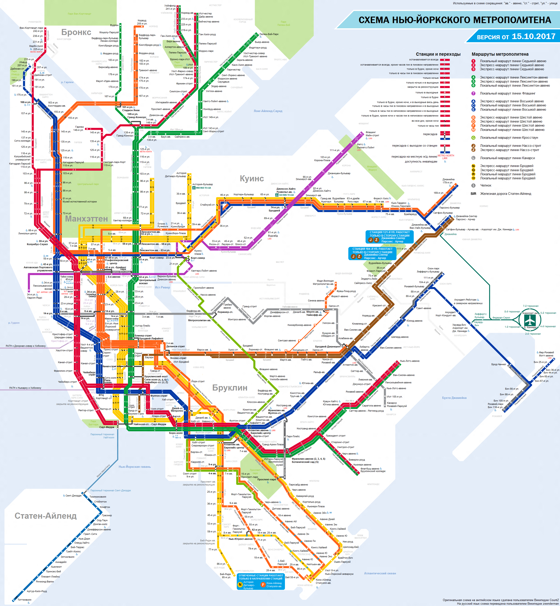

New York City Subway — крупнейший метрополитен в мире по количеству станций: на 26 подземных, наземных и надземных маршрутах расположено 468 станций. Это одна из старейших и самых протяжённых транспортных сетей на планете — длина линий Нью-Йоркского метро достигает 1355 км. Свою историю метро ведёт с 1869 года, а первая подземная станция была открыта в 1904 году.
Несмотря на то, что метро Нью-Йорка традиционно называют Subway или «подземка», 40 % путей в нём наземные или надземные, полностью обособленные от уличного движения. Почти все линии Нью-Йоркского метрополитена проходят через центр и охватывают Манхэттен, Бруклин, Бронкс и Квинс — в Стейтн-Айленде действует отдельная линия, не причисляемая к центральной «подземке».
Однократная поездка на нью-йоркском метро обойдётся в 2,75 USD. Многодневный проездной билет (недельный стоит 33 USD, месячный — 127 USD) дает право на проезд в метрополитене и городских автобусах. Отсчёт начинается в момент первого прохода через турникет метрополитена или автобуса независимо от времени суток, заканчивается действие билета в полночь через положенное количество дней. Штраф за безбилетный проезд в Нью-Йоркском метро равен 100 USD. Цены на странице указаны на июль 2021 г.
Нью-йоркский метрополитен ежедневно провозит порядка 4,4 млн человек (по пассажиропотоку он уступает лишь метро Токио, Москвы и Сеула). Это один из самых демократичных видов транспорта в городе: здесь можно увидеть не только простых жителей города, эмигрантов, туристов, но и бизнесменов, актёров, известных людей.
